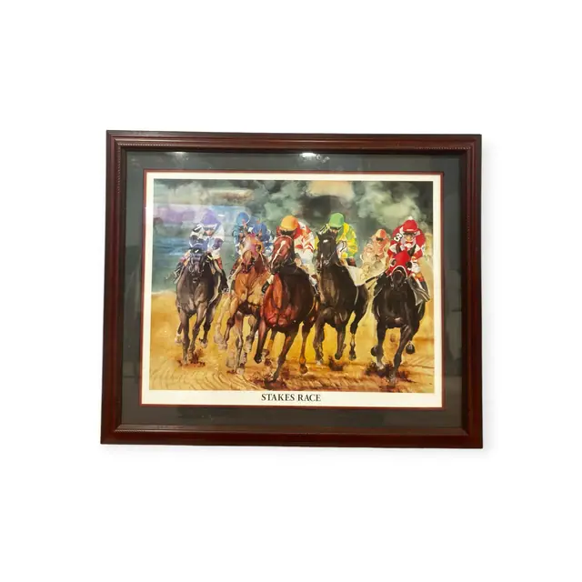
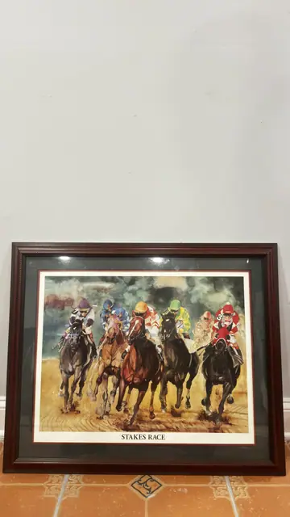
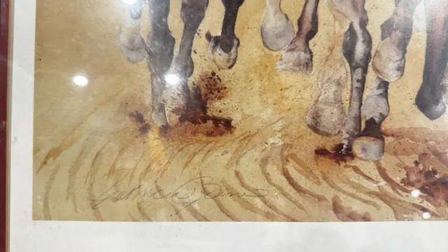

Paintings & Prints
Stakes Race, Watercolour-Style Horse Racing Print, Signed, Framed
· late 20th century
Price Upon Request



About the Item
Five racehorses come straight at the viewer out of a smoky blue-grey haze, their jockeys in scarlet, emerald, gold and blue silks with goggles down. The horses' heads and chests are painted with wet, bleeding washes of chestnut, black and umber, while the track below dissolves into loose ochre and rust streaks with spattered clods of dirt. A pale crowd is only suggested behind. The printed title sits in the white margin under the image, and the sheet is double matted in cream and burgundy. Medium: offset lithograph reproduction of a watercolour, on paper. Signed lower left of centre, within the image. Inscribed on the reverse or mount: STAKES RACE , printed in capitals in the lower margin of the sheet; cursive signature across the lower part of the image, not legible in the photographs. Condition: No visible damage; sheet clean with full printed margin. Heavy lamp reflections on the glass in every shot.
Details
- Creation Year:
- late 20th century
- Dimensions:
- Height: 27.0 in (68.58 cm)
Width: 32.5 in (82.55 cm)
outside of frame - Medium:
- offset lithograph reproduction of a watercolour, on paper
- Period:
- 20Th
- Condition:
- Offered in the condition shown in the photographs.
- Reference Number:
- VO-225
- Documentation:
- no certificate present
- Gallery Location:
- STAKES RACE , printed in capitals in the lower margin of the sheet; cursive signature across the lower part of the image, not legible in the photographs